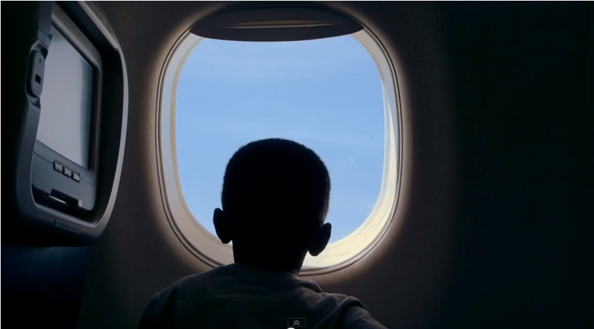
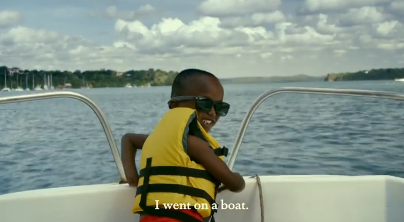
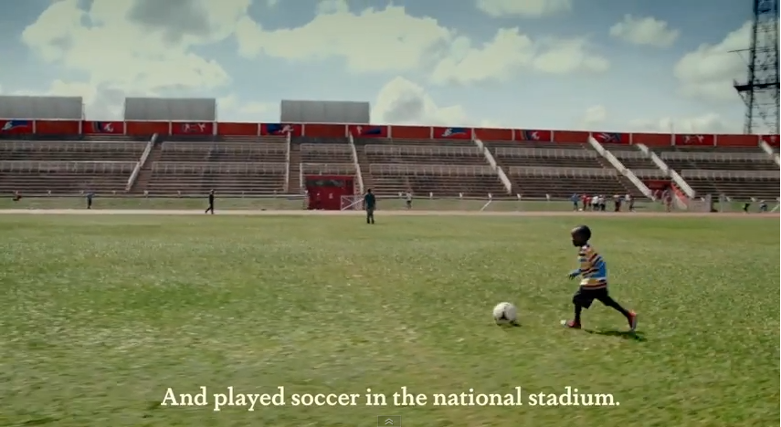
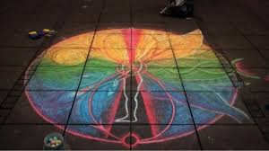

今回は、物事の価値を再認識させる上で、とても強力な法則のご紹介。
世界の在り方を「子ども目線」で切り取ることで、物事の本質をあぶり出す“子どもから見た世界”の法則です。
[Chapter 1] 事例から法則を読み解く
生まれて初めての“雨”に大興奮する子どもに、ハッとさせられる。
生まれて初めての”雨”に心を弾ませる幼児の姿をとらえた、“Sweet Baby Experiences Rain for the Very First Time”という動画があります。
まずはぜひ、そちらを御覧ください。
とても可愛らしいですよ。
心の底から”空から水滴が落ちてくる”ことを不思議に思い、やがて何がなんだかわからないくらいに楽しくなってしまった、その姿。
無条件に見る人をなごませ、感動させる、圧倒的な力があるように思います。


この動画を観たとき、とてもとても優しい気持ちになりましたが、それと同時に、僕はあるショックも受けていました。
それは、「世界は不思議で、素晴らしくて、美しい」という絶対的な事実を、今ではこんなにも当たり前に受け入れ、感動できなくなってしまったということです。
頭上空高く、大きな大きな青が広がっていること。
そこから数多の水滴が、地上に降り注ぐこと。
やがて晴れ間が広がった後に、七色のアーチがかかること。
時が経って周囲が暗くなると、遠くに星が光となって煌めくこと。
あげようとしてもキリがなくて途方に暮れてしまうほど、当たり前に世界は、ダイナミックな美しさで満ち満ちている。
なのに、今日の天気は雨、と聞いて、「濡れるの嫌だ」とか「めんどくさい」だなんて思い始めたのは、いつからでしょうか。
物心がついた時には、すでにそんな印象だった気もします。
大人になるにつれ、「未知＞既知」という世界のバランスは、いつの間にか「未知＜既知」になる。
だから、極端にデフォルメされたニュースや一風変わったイベントなど、まだ目にしたことのない“演出された”未知にしか感動できなくなっているように思います。
だからこそ、見るものすべてが未知に満ちている“子どもから見た世界”という視点を取り戻すことで、物事の価値を再認識することができるのかもしれません。
少し脱線してしまいますが、雨に感動できなくなってしまったのは、「大人になったから」だけが原因ではないような気がします。
昔の大人たちは、なぜ空があり、雨がふり、虹がかかり、星が煌めくのかを知りません。
だからその”空白”を、神話にもとづく物語で埋め、崇め続けてきました。
人間を超える圧倒的な存在を認めなければ、世界がこんなに美しい説明がつかない。
そう思ったのだと思います。
「人間にはわからないもの」。
そう位置づけることで、強い神秘や魅力を常に感じることができた。
でも、今では科学が発達して、空も雨も虹も星でさえも、同じものは創れなくとも「人間にもわかるもの」になりました。
その瞬間から、大人は世界に対する畏怖を失ってしまったのかもしれません。
ちなみにこれは、誰かを好きに思う気持ちも、きっと一緒ですよね。
「あの人のアレとコレが好き」と理性的に理解できてしまう「条件付きの好き」は、きっと強い好きではないと思います。
理屈で整理できてしまう程度の条件なんて、それを上回る人は必ず世の中にいますからね。
顔で選んだらもっといい顔が現れれば別れる理由になるし、それは性格でも一緒です。
でも、「なんでかわからないけどとにかく好き」と、感情的にしか説明できない「好き」は、きっと何より一番強い。
「わからない」ところに神秘があり、「わかりたい」ところに魅力があります。
そうした「わからない」けど「わかりたい」ものこそ、人が強く惹かれ続けるものですからね。
裏を返せば、「わかる」は「飽きる」の二歩手前、ということです。（一歩手前は「満足」でしょうか？）
空や雨や虹や星といった、どんなに美しいものたちも、わかった気になってしまった瞬間から、感動は剥がれ落ちてしまうのかもしれません。
だからこそ、まっさらな子どもの視点が、世界の正しい美しさを思い起こさせてくれます。
日本新聞協会広告委員会が「しあわせ」をテーマに実施した「新聞広告クリエーティブコンテスト」にて最高賞を受賞した、とある作品があります。

ボクのおとうさんは、桃太郎というやつに殺されました。
この作品も、「鬼の子ども」という視点から誰もが知る童話を見つめることで、深い気づきを与えてくれます。
価値の再認識、というよりは、価値の再考、といったところでしょうか。
強い視座だと思います。
＞＞＞＞＞＞＞＞＞＞＞＞＞＞＞＞
[ “子どもから見た世界”の法則｜Point ]
◎「子どもが（生まれて初めて）目にしたらどのように見えるか・反応を示すか」を考えてみる
◎答えを与えるのではなく、子どもの反応を通して「問いを投げかける」
◎ドキュメンタリーに、映像で示すと強い
＞＞＞＞＞＞＞＞＞＞＞＞＞＞＞＞
以降では、この法則を念頭に置きながら、活用イメージを深めていきます。
[Chapter 2] 法則から事例を読み解く
アフリカの子どもへキレイな水を届ける活動への寄付を集めるには？
東アフリカに位置するケニア共和国では、“キレイで安全な水が飲めない”ことが原因で、5人に1人が5才の誕生日を迎えることなく人生の幕が閉じてしまうといいます。（2013年当時）
「なので寄付してください」と訴えたところで、お金のある多くの人にとってはそんなアフリカの子どもの状況は想像ができませんから、そう多くの寄付は集まりそうにありません。
“子どもから見た世界”の法則の観点から考えると、どのような寄付キャンペーンが考えられるでしょうか？
きれいな水を届けることを使命に掲げて活動しているWATERisLIFEが実施したのは、とあるマサイ族の4才の少年の“Bucket List”（生きているうちに成し遂げたいこと）を叶えてあげるというプロモーションフィルムでした。
村を一歩も出たことがない彼の願いは、「飛行機に乗ってみたい」「ボートに乗ってみたい」「競技場でサッカーをしてみたい」「気球で空を飛びたい」など。
それらを一つずつ叶えていく模様を映像におさめました。




先進国の子どもにとってはいつか叶う夢であっても、彼にとっては途方もなく贅沢な夢。
それをひとつずつ叶える様子に心を打たれながらも、「でも、5才までにこの子も死んでしまうかもしれない」という事実。
世界には、どれだけ楽しいことや夢あふれることがあるのだろうか？
でも、キレイな水が飲めないことで、子どもはどうなってしまうのか？
そういったことを子ども目線で伝えているからこそ、世界の希望と絶望が力強いメッセージとして残ります。
いたずらに面白キャンペーンを実施したり社会的使命を掲げたりするよりも、効果のあるキャンペーンになったのではないでしょうか。
[Chapter 3] ブレスト・トライアル
ゴミのポイ捨て問題を子ども目線で捉えると？

“子どもから見た世界”の法則を、「ゴミのポイ捨て問題」を例に活用してみます。
いくらポイ捨てはダメだと言っても、なかなかなくならない路上のゴミ。
無責任な大人が平気な顔でコンビニ袋やタバコをポイ捨てしたり、華金の夜はゲロを吐いていたりする。
直らないものは直らないよね、で諦めたくなるようなこの問題。
ですが、捨てる人あれば拾う人ももちろんいて、僕もNPOの活動でゴミ拾いに参加したことがあります。
そのとき、一緒にゴミ拾いをしたのが、地域のちびっ子たちだったんですね。

まるで宝探しのようにゴミを拾う健気な子どもたちをみて、それはそれで楽しかったのですが…
ふと、思ったんです。
なぜ、大人が無責任に捨てたゴミを、子どもが拾わされてるんだろう。
しかも、大人はゴミを路上に捨てることで、自分の目の高さとゴミに「距離」ができますので、路上のゴミの大きさは相対的に小さくみえるようになります。
だから、路上のゴミなんて少し目を外せば、気にもならなくなる。
でも、子どもの目の高さは違います。比較的、路上に近い。
幼いころ目にするすべてのものが「大きくみえる」ように、ゴミもまた、彼らの視界からみれば「目を背けがたいほど目障りなもの」として、映っているかもしれない。
事実、子どものほうが簡単にゴミを見つけてくるんですね。
その落差、矛盾に、とても悲しくなってしまいました。
であれば、“子どもから見た「巨大な」ゴミのポイ捨て世界”を、大人にも見せることは出来ないか。
ゴミのポイ捨ては、「景観を汚す」のではなく、「子どもの視界を汚す」ことに気づけた時、大人の行動はもっと変わるのかもしれません。
…といいつつ、なかなか妙案が思い浮かばないのですが、でもたとえば、
・「幼い子どもの視点から切り取った」ゴミの転がる路上風景を、子どもにはこう見えてますよ、というメッセージ付きで路上の脇に展示してみる

※イメージ絵です
・ゴミの存在感を伝えるべく、ポイ捨てされたゴミの周りに「子どもにはこう見える」路上アートを施す

※イメージ絵です
・ゴミの上に「虫眼鏡」レンズを覆い被せて、子どもが感じる大きさにゴミを拡張する

少し考えてみたのですが、どれもあまりイケてないですね…。
法則とは逸れますが、素直に、「この道路のゴミはすべて、子どもたちが拾っています」ということがわかるようなメッセージやビジュアルを打ち出すだけでも、効果があるのかもしれませんね。
いずれにしても、ゴミのポイ捨て問題において、子どもからの目線や関わりを認識させることは、特にお子さんのいる親であれば一定の訴求力があるように思いました。
…そう考えると、全児童が参加するゴミ拾い運動みたいなものがあると、親はゴミのポイ捨てをしなくなるのかもしれませんね。
最後、とりとめもなくすみません。。
※その他の類似施策は、以下URLにまとまっていますのでご参考ください。
Related Posts
-
 2016年4月22日
2016年4月22日